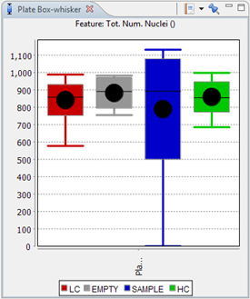

The Plate Box Whisker view plots multiple boxes, according to the different well types that are present in the plate. The different box plots are ordered by plate number on the x axis and use the selected feature in the Feature Selector.
This plot gives a graphical representation of the distribution of the values. Descriptive statistics like mean, median, standard deviation and 90% percentiles are shown.
